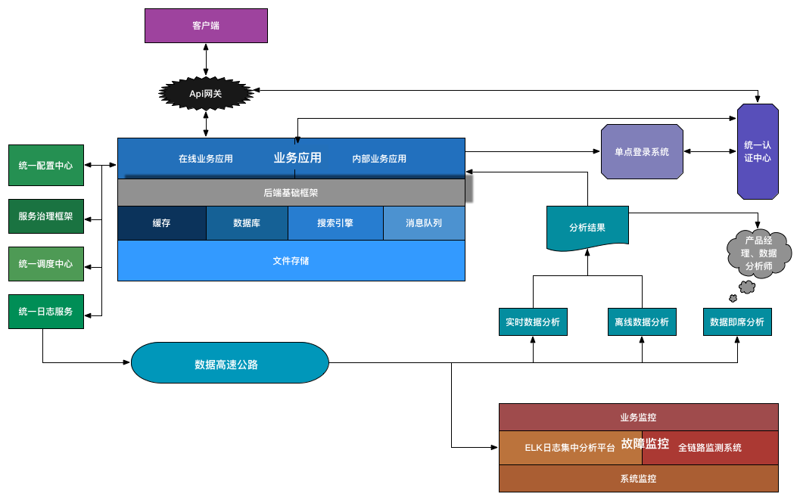

Hello World
CodeTengu Weekly 碼天狗週刊
CodeTengu Weekly 會在 GMT+8 時區的每個禮拜一早上 10:00 出刊，每一期會從目前的 curator 名單中選出三位來負責當期的內容，每個 curator 各自負責不同的領域。如果你在這一期沒有看到自已感興趣的東西，說不定下一期就會有了。你也可以瀏覽一下前幾期的內容。
以下是目前的 curator 陣容：
- @vinta - I failed the Turing Test - 科幻迷，最近在讀 The Best of Isaac Asimov
- @saiday - Imnotyourson - 太熱了
- @tzangms - Oceanic / 人生海海 - 衝動型購物
- @fukuball - ImFukuball - GCP 好用嗎？
- @wancw - comiXology 的坑好大啊～
- @mingderwang - Ethereum enthusiast
- @kako0507 - 熱愛嘗試新事物的前端工程師
- @chiahsien - 我們在找 iOS 工程師與其它人才，歡迎來跟我當同事。
- @hiroshiyui - 非典型司書
- @uranusjr - Smaller Things - 不愛談技術的技術人，最近對做菜很有興趣
- @kkdai - 態度萬歲 - 喜歡 Golang 的略懂工程師
- @yhsiang
大家也可以關注我們的 Facebook、Twitter、GitHub 或微博，有很多 Weekly 看不到的內容。有任何建議或疑問也可以來 Gitter 聊聊，歡迎亂入 👺
 @vinta
@vinta
10 Modern Software Over-Engineering Mistakes
作者列出的這十個過度工程、過度設計的現象，不可不慎吶！雖然過度工程的分寸實在不好難捏，但是還是有一些常見徵兆，比如說你對你的程式未來的演變做了「過多的假設」，甚至是毫無根據的假設。#BornToDoOverengineering
延伸閱讀：
Walking the Microservices Path Towards Loose Coupling? Look out for These Pitfalls
採用 Microservice 的目的就是為了解耦，讓各服務能夠彼此獨立開發、獨立部署。而重點其實就是在界定 Microservices 的 Boundaries（邊界），白話一點的說法是到底該怎麼拆分服務。
這篇文章就列出了幾個「痛點」，當然，最麻煩的始終還是資料庫。
延伸閱讀：
Hidden features of Python
這個 Stack Overflow 的一大串回答裡列出了超多可能不是每個 Python developers 都知道的小技巧。裡頭有幾個我還真的不知道，例如原來 re.sub() 可以接受 function 當參數、可以在 regular expression 裡寫註解（透過 re.VERBOSE） 以及 from __future__ import braces，大家可以自己在 REPL 裡試試看效果如何。
延伸閱讀：
Makefiles in Python projects
當然不只是 Python，所有的語言都可以用 Makefile。絕大部份的情況下，你根本不需要什麼額外安裝的 build tool 或 task runner（望向 JavaScript），真的，你真的只需要一個 Makefile 就夠了。
 @fukuball
@fukuball
林軒田教授機器學習技法 Machine Learning Techniques 第 3 講學習筆記
Machine Learning：中級
上一講中我們介紹了 Dual SVM，將 SVM 問題轉換成對偶問題來做計算，但上一講中仍未完全講解為何 Dual SVM 能減少計算量增加效能，在這一講中將會從 Dual SVM 引入 Kernel 的概念，將特徵轉換透過 Kernel function 來做處理，讓 SVM 可以做到無限多維的特徵轉換。
其實平常大家在說的 SVM，通常就是指 Kernel SVM，所以 SVM 工具通常會有提供許多種 Kernel 來讓我們做不同的轉換，每種 Kernel 會有不同的性質，可以調的參數也會不同，所以了解 Kernel function 本身是做了什麼轉換，也會比較容易明白怎麼去調參數。
Large scale matrix multiplication with pyspark
Machine Learning：中級
本篇文章利用模糊比對公司名稱的例子來說明如何使用 Spark 做龐大矩陣的運算，從最簡單的方法開始嘗試，然後一步步導引之後，引出做 NLP 常常會遇到的稀疏龐大矩陣運算，可能造成記憶體不足的問題，進而使用 Spark 來做到分散式運算處理，由於例子簡單，蠻適合讓大家模仿他的做法自己嘗試看看～
A Response To PHP- The Wrong Way
PHP：中級
關於 PHP 這個語言，網路上一直充斥著大量的過時資訊並且傳播著錯誤的實踐以及不安全的代碼，很容易讓 PHP 新手誤入歧途，所以有了 PHP the right way 這個最佳實踐電子書，讓 PHP 新手可以有一個良好的入門之道。
而最近也出現了一個 PHP the wrong way，與 PHP the right way 相比，PHP the wrong way 比較偏向心法或是一些經驗法則，沒有提供比較具體的實踐或是建議，因此本篇文章作者對於 PHP the wrong way 很不以為然，簡而言之，就是認為 PHP the wrong way 是「廢文」一篇。所以其實這篇回應「廢文」的文章嚴格來說也是一篇「廢文」呢～
Human readable regular expressions for PHP 5.3+
PHP：中級
我個人最討厭寫 Regular Expression 了，既不直覺又難維護，但偏偏還蠻常遇到的。這個 PHP 套件某種程度解決的 Regular Expression 不直覺又難維護的問題。
如果看 Read Me 覺得不夠詳盡的話，也可以看看 wiki。
 @wancw
@wancw
(影片) Don’t Build a Distributed Monolith
Facebook 工程師談 microservice 裡很容易犯的 anti-pattern: Distributed Monolith ，如果你懶得看影片的話，重點在於他引用的這句話：
The evils of too much coupling between services are far worse than the problems caused by code duplication
補充資料：
- Hacker News 上的討論
- InfoQ 上的摘要
Microservice 之間應該要能獨立地運作，連程式碼也該是如此；嘗試在 (micro)service 之間維護一份共用程式碼只會帶來更多的問題。我近三年的工作經驗也不斷驗證這個觀點（其中還包括嘗試在 server、Android、iOS App 間共用一份 core-library，那真是艱鉅的挑戰……）。

谈谈互联网后端基础设施 - 后端技术杂谈
本文提及了快取（缓存）、資料庫（数据库）、搜尋引擎（搜索引擎）、消息队列、日誌（log）收集、資料分析、服務監控等主題，以及目前廣為採納的工具或解決方案。
原標題說是「基礎設施」，我覺得適合拿來作為後端（backend）的鳥瞰地圖。不管用來當作培養自己技能樹的指引或是拿來檢視自家產品哪邊需要補強都是不錯的起點。
不得不說，後端的水真是有夠深；好處就是因為要做的事情太多了，總是會有位置可去。與各位共勉之。 :)
Testing, for people who hate testing
如果你的系統都沒有測試，要嘛是你的系統太簡單了、要嘛就是你的膽量太大了。 假如你不喜歡、不知道如何寫測試，那花點時間看一下這篇，然後開始幫你的系統補上測試，有一天你會感謝你自己的！
作者先談了些喜歡上（至少不要這麼討厭）寫測試的方法，然後討論該測試什麼東西以及該如何寫測試。最後也提及了軟體系統中一些較難測試的部分，如外部狀態（資料庫）、Web 頁面、GUI 等。
Falsehoods Programmers Believe About Names
姓名是軟體系統中很常見的欄位，但是你知道有很多理所當然的假設都是錯的嗎？
從文章中隨意挑幾個，像是：
- 我的系統裡不會出現中文、日文、韓文、…… 名字
- 每個人都有剛好 1 個（或 N 個）名字
- 人名一定有辦法以 Unicode 字元表示
- 人名是分（或不分）大小寫的
延伸閱讀：對電話號碼的錯誤假設——
Falsehoods Programmers Believe About Phone Numbers
工作機會
Python Web Developer at StreetVoice (台北、北京、上海)
開發及維護 StreetVoice 旗下相關網站。
意者歡迎來信：tzangms@streetvoice.com。
Random Cool Stuff
Transistor on Steam
上禮拜剛玩完這款遊戲，忍不住要跟大家分享一下。
這應該是一款程序員會覺得很親切的獨立遊戲（Indie Game），比如說遊戲中的城市叫做 Cloudbank、男主角在看到某個景色之後脫口而出的第一句話是「Hello, World」、女主角使用的招式就是一個個的 Functions（裝備 Functions 還會消耗 Memory）、遊戲中的主要敵人叫做 Process 以及破關之後開始二周目稱為 Recursion()。畢竟這可是個 Cyberpunk 題材的遊戲呢，不過不是 Blade Runner 那種，而是 The Matrix 那種。
但是這款遊戲真正讓人想推薦的原因其實還是它在美術和音樂兩個方面的表現簡直登峰造極，尤其是配樂，好聽到我的耳朵都要懷孕了。總之大家有空可以買來感受一下。然後如果你聽了我的建議跑去玩了，發現很喜歡，我覺得你也可以試試 Life Is Strange。哎呀，Steam 上的 Overwhelmingly Positive 的評價是錯不了的。
由 @vinta 分享。